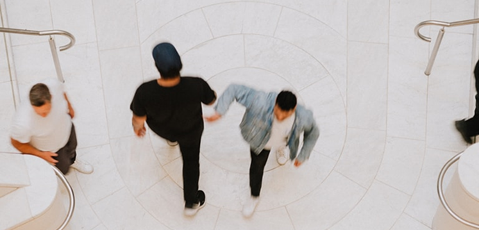

Онтогенез речи отражает групповой эриксоновский гипноз.
Заголовок h3
Один из самых важных навыков, которые может дать работа с психотерапевтом — умение в разных ситуациях по-разному обходиться со своими эмоциями. Снять этот процесс с автопилота и перевести его в поле сознания.
Давайте, к примеру, разберем тревогу. Можно разложить перед собой целую коллекцию доступных реакций и выбрать нужную: избегание, обесценивание, рационализация, юмор или осторожность.
Мы знаем, что нуждаться в помощи и поддержке в трудные периоды жизни абсолютно нормально, и стремимся сделать психотерапию понятной и доступной каждому.
Ана Крымская
Чем шире доступный вам репертуар реакций и чем более осознанно вы можете выбирать, тем выше ваша психологическая устойчивость.

Чем шире доступный вам репертуар реакций и чем более осознанно вы можете выбирать, тем меньше риск утонуть в тревоге и действовать по накатанной.
Что еще можно делать с тревогой?
- Управлять ей через что-то внешнее: включать музыку, которая создает другое настроение, идти на прогулку или звонить близкому человеку.
- А еще порой можно разрешить себе тревогу заесть чем-то вкусным. Это, конечно, не самая здоровая стратегия, но иногда именно она помогает переждать волну.

Чем шире доступный вам репертуар реакций и чем более осознанно вы можете выбирать, тем спокойнее вы будете реагировать на стрессовые события.


Одна из ключевых задач психотерапии как раз и заключается в том, чтобы этот репертуар расширять: учиться замечать автоматические реакции и добавлять новые, более бережные к себе.